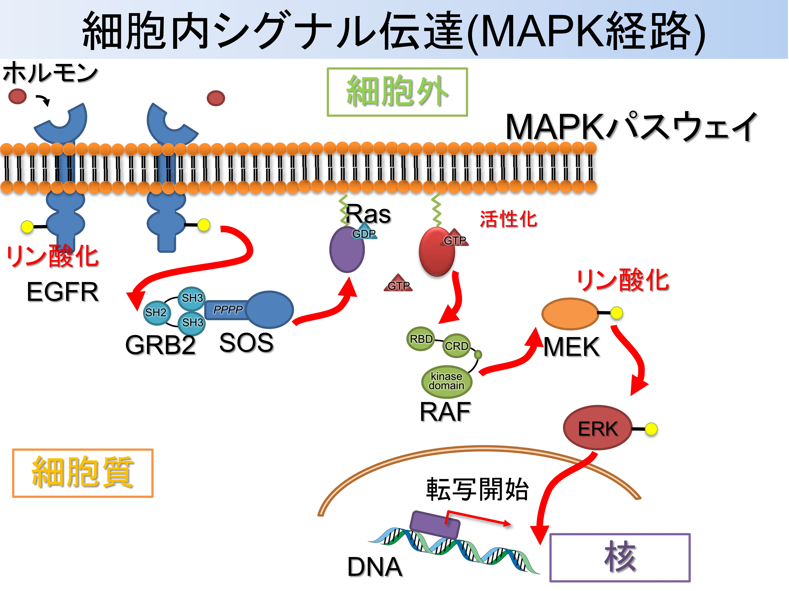
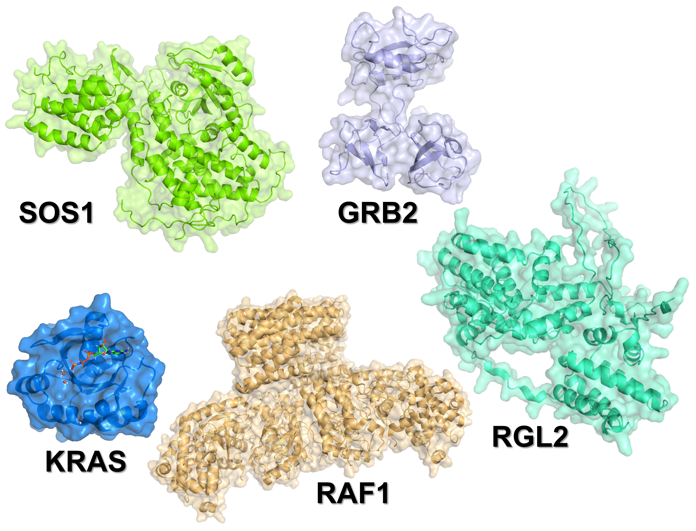
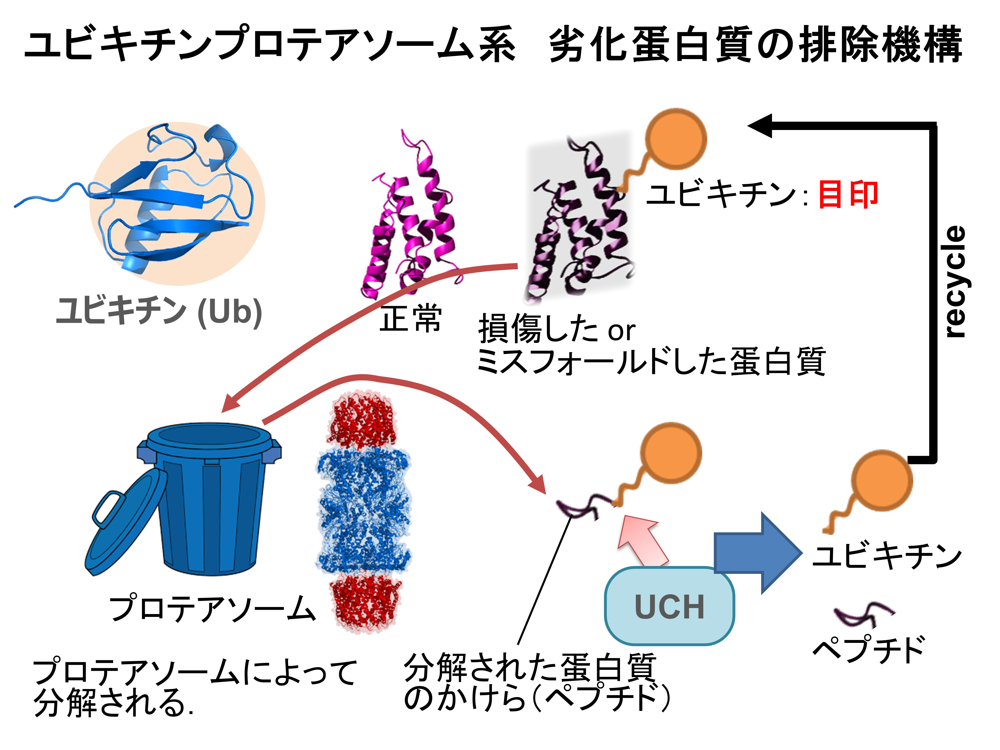
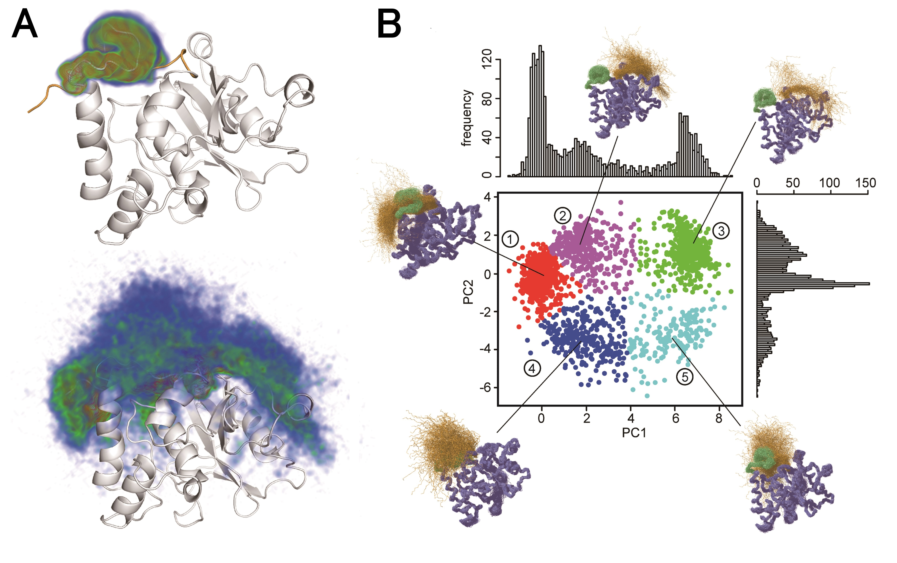
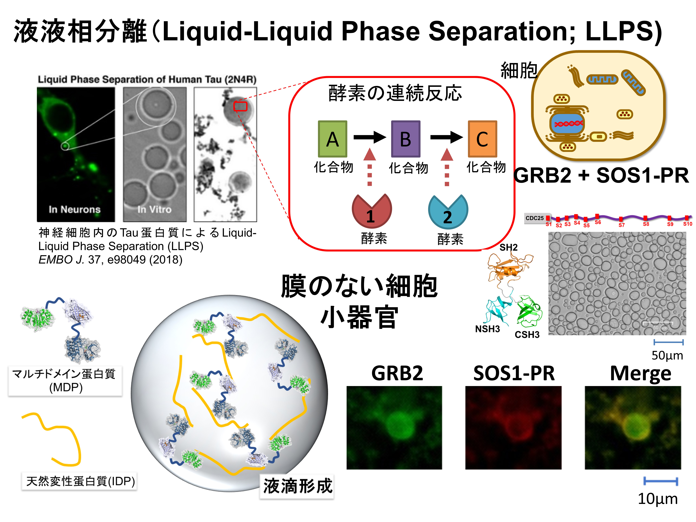
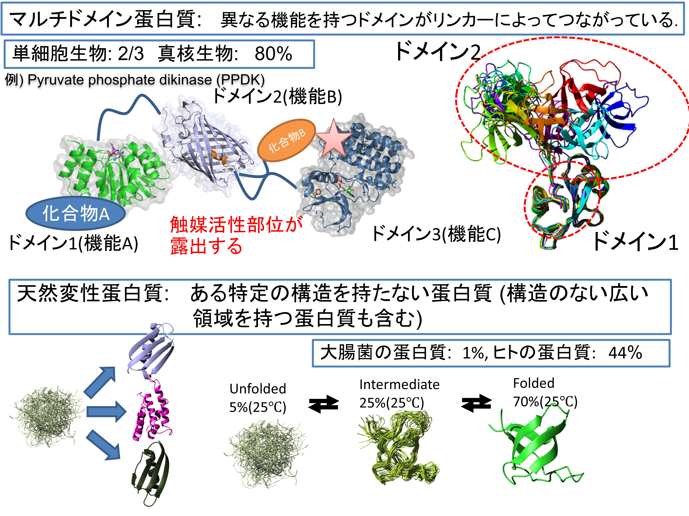
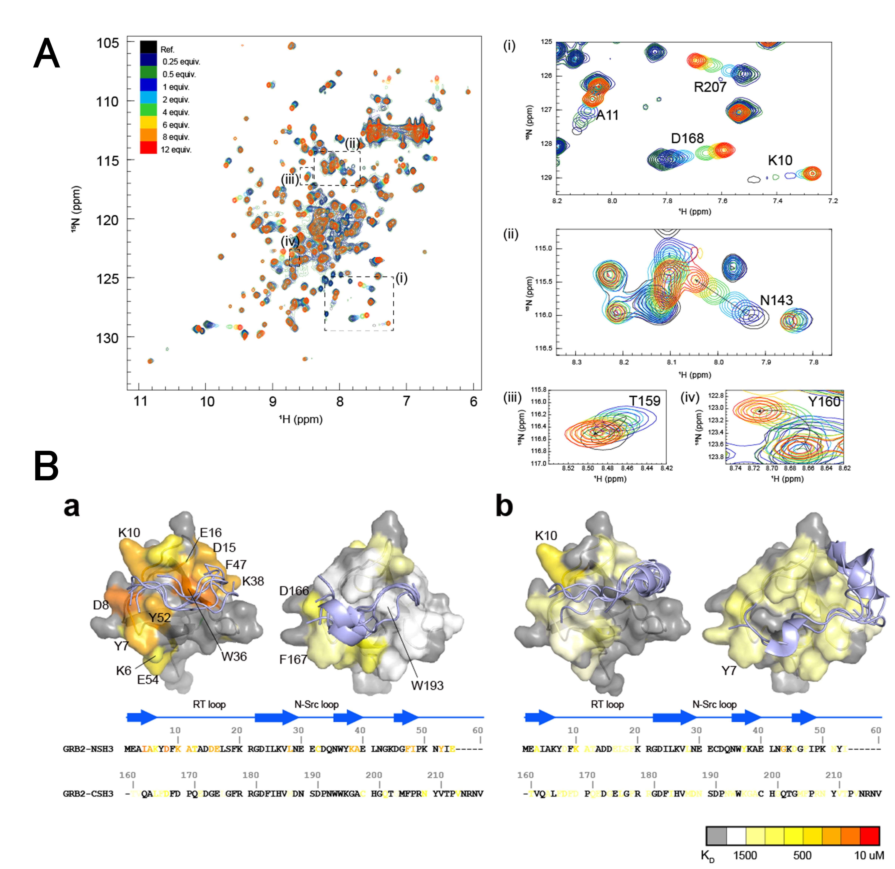

multi-state立体構造計算法
NOE，化学シフト，緩和などの実験情報を統合し，単一の平均構造ではなく複数構造のアンサンブルとして立体構造を決定する計算法を開発します．
BIOPHYSICAL CHEMISTRY LABORATORY
生体分子は，一つの場所に，一つの形（構造）でじっととどまっているわけではありません．絶えず揺らぎ，さまざまな相手と出会い・支え合い，形や状態を変えながら日々働いています．私たちの研究室では，生体分子がどのように動き，出会い，働くことで，私たちの体を維持しているのかを明らかにすることを目指しています．
← 研究室トップへ戻る構造解析，相互作用解析，方法論開発，分子シミュレーションを相互に行き来し，実験データだけでも計算だけでも捉えにく生体高分子(DNA, RNA, タンパク質)の多型構造とその動的性質を研究しています．
シグナル伝達に関わるタンパク質や各種酵素タンパク質の中で，特にマルチドメインタンパク質や天然変性領域を持つタンパク質を対象に，構造の集合と時間変化から分子機能を読み解きます．
細胞外からの刺激は，細胞膜上の受容体にホルモンや増殖因子などのリガンドが結合することで，細胞内へ伝えられます．リガンドが結合すると受容体の細胞内領域のリン酸化が起こり，これを起点としてさまざまなシグナル伝達タンパク質が順次活性化されます．こうして伝えられた情報は最終的に核内の転写因子へ到達し，遺伝子発現を変化させることで，細胞の増殖や分化などを制御します．
私たちの研究室では，数ある細胞内シグナル伝達経路の中でも，細胞増殖や分化に重要なRAS–MAPK経路に関わるタンパク質を研究しています．この経路では，膜受容体であるEGFRに増殖因子が結合すると，その情報が細胞内にあるタンパク質に伝わります．

最初に，GRB2がEGFRを認識し，SOS1を細胞膜付近へ呼び寄せます．SOS1はRASに結合してGDPとGTPの交換を促進し，RASを活性化します．活性化されたRASはRAF–MEK–ERKからなるMAPK経路を作動させ，細胞増殖や分化に関わる遺伝子の発現を制御します．また，RASはRGL2をはじめとする複数のエフェクターとも結合し，MAPK経路以外のシグナル伝達にも関与します．
私たちは，GRB2，SOS1，RAS，RAFおよびRGL2を含む分子群を対象として，それぞれのドメインや天然変性領域がどのように相互作用し，協調して情報を伝達するのかを解析しています．特に，これらのタンパク質の立体構造とダイナミクスに着目し，シグナル伝達を制御する分子機構の解明を目指しています．


細胞内では，役割を終えたタンパク質や異常な構造をもつタンパク質を適切に分解し，新しいタンパク質と入れ替える必要があります．このタンパク質の品質管理を担う主要な仕組みが，ユビキチン–プロテアソーム系です．分解対象となるタンパク質には，ユビキチンと呼ばれる小さなタンパク質が付加され，プロテアソームに運ばれて分解されます．この機構は，細胞周期，シグナル伝達，DNA修復など，さまざまな生命現象を制御しています．
一方，タンパク質に付加されたユビキチンは，脱ユビキチン化酵素（deubiquitinating enzyme：DUB）によって切断されます．DUBは，ユビキチン鎖を除去または編集することにより，標的タンパク質を分解から保護したり，逆に分解を促進したりします．ユビキチンを再利用できる状態に戻す役割も担っています．このユビキチンの付加と除去のバランスによって，細胞内のタンパク質量と機能は精密に調節されています．

私たちは，DUBの一群であるUCHL1，UCHL3およびUCHL5を研究対象としています．UCHL1は神経細胞に多く存在し，細胞内のユビキチン恒常性とタンパク質品質管理に関与します．UCHL3はユビキチンやユビキチン様タンパク質を認識し，その末端に結合した分子を切断します．一方，UCHL5はプロテアソームの19S制御粒子に結合し，標的タンパク質に付加されたユビキチン鎖を切断・編集することで，プロテアソームによる分解を調節します．UCHL5がプロテアソーム上でユビキチン鎖の枝分かれを解消し，基質分解を促進することも報告されています．
私たちは，これらのDUBがユビキチンをどのように認識し，切断するのかを，立体構造とダイナミクスの両面から解析しています．特に，酵素が単一の構造をとるのではなく，複数の構造状態の間を移り変わるmulti-state構造に着目しています．溶液NMRを用いて，ユビキチンの結合に伴う活性部位周辺の構造変化や運動性の変化を明らかにし，DUBによる基質認識と触媒反応の分子機構を理解することを目指しています．
細胞内には，核やミトコンドリアのように膜で囲まれた細胞小器官だけでなく，特定のタンパク質や核酸が集合して形成される「膜のない細胞小器官」が存在します．その形成原理の一つが，液–液相分離（Liquid-Liquid Phase Separation; LLPS）です．LLPSによって特定の分子を局所的に濃縮することで，細胞は生化学反応の速度や場所を動的に制御できると考えられています．
GRB2は二つのSH3ドメインをもち，SOS1の天然変性領域に存在する複数のプロリンリッチ配列と結合します．このような多価相互作用によって多数の分子が集合すると，GRB2とSOS1を含む分子凝縮体が形成される可能性があります．私たちは，GRB2–SOS1間の相互作用と構造ダイナミクスを解析し，分子凝縮体の形成がRASを局所的に活性化し，細胞内シグナル伝達の強さや持続時間をどのように制御するのかを明らかにすることを目指しています．


タンパク質の中には，複数の構造単位（ドメイン）が柔軟なリンカーで連結されたマルチドメインタンパク質があります．それぞれのドメインは比較的安定した立体構造をもちますが，ドメイン間の位置や向きは絶えず変化しています．この動きによって複数の分子を同時に認識したり，離れた結合部位の間で情報を伝えたりすることができます．
一方，天然変性タンパク質や天然変性領域は，単独では特定の立体構造をとらず，多数の構造の間を速く移り変わっています．この柔らかさによってさまざまな相手分子と結合できるほか，結合に伴って特定の構造を形成することもあります．また，多価相互作用を介した液–液相分離にも重要な役割を果たします．私たちはNMRを用いて，マルチドメインタンパク質と天然変性タンパク質の構造集団や運動を解析し，その「柔らかさ」が分子認識や細胞内シグナル伝達にどのように利用されているのかを明らかにすることを目指しています．
分子同士が結合する／しないだけでなく，タンパク質やRNAのどの残基が，どの強さで，どのような時間スケールで認識に関わるかを定量します．
NMR滴定では，標的分子の添加に伴う各シグナルの位置や強度の変化を追跡できます．GRB2–SOS1およびSOS1–RASを対象として，結合面，結合に伴う構造変化，ドメイン間協調を残基分解能で解析します．
滴定曲線を残基ごとにフィッティングし，見かけの解離定数 KD を推定します．残基間で値が異なる場合には，単純な1対1結合からのずれ，局所構造変化，交換過程，複数結合様式などを検討します．グローバル解析と残基別解析を併用し，数値の不確かさも評価します．

核磁気共鳴分光(NMR)法は，溶液中や生細胞中の蛋白質や核酸，脂質などの立体構造，ダイナミクス，熱力学的安定性，分子間相互作用など，様々な分子情報を原子分解能で得ることができる構造生物学研究の柱となる方法です．NMRでしか得られない様々な分子の情報を最大限に引き出すために，私たちはこのNMR計測・解析法の改良にも取り組んでいます．既存の手法では見えない構造状態や細胞内環境を捉え，限られた測定時間から最大限の情報を引き出す技術を開発します．
NOE，化学シフト，緩和などの実験情報を統合し，単一の平均構造ではなく複数構造のアンサンブルとして立体構造を決定する計算法を開発します．
生きた細胞内，または細胞に近い混雑環境におけるタンパク質の構造・運動・相互作用を測定する試料調製法と計測法を開発します．
スパースサンプリングなどで得た限られたNMRデータから，高品質な多次元スペクトルを再構成し，測定の高速化と感度向上を目指します．
NMR緩和解析法で得られた分子の運動性を分子動力学（MD）シミュレーションと比較し，実験で観測された平均量の背後にある原子レベルの運動を調べます．
GRB2，SOS1，RAS，YUH1，UCHLファミリーなどを対象に，ドメイン運動，IDPの構造集団，活性部位周辺の交換を解析します．シミュレーションから得られる構造集団をNMRデータで検証・再重み付けし，実験と整合する分子像を構築します．
tRNAの全体構造，局所的な塩基対，イオンや水分子との相互作用が，分子認識と機能に与える影響を調べます．実験で直接捉えにくい短寿命構造や局所運動をMDシミュレーションで可視化します．